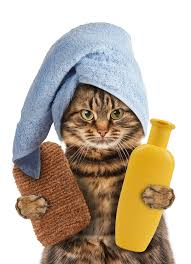
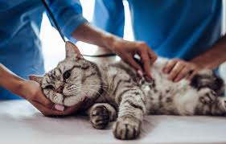
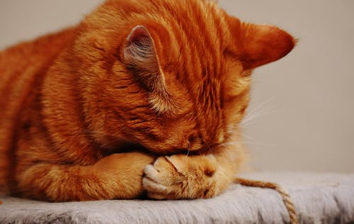

Katty Care Center

You should brush or comb your cat regularly. brushing helps keep your cat's coat clean, reduces the amount of shedding and cuts down on the incidence of hairballs.

Environment Outdoor cats typically need a bath more frequently than indoor cats. Self-grooming behaviour Your cat needs regular baths if she cannot groom herself efficiently to keep her coat from becoming sticky or greasy. Active cats will require more frequent bathing as they get dirty easily.

Never give your cat medication that has not been prescribed by a veterinarian.
Don’t give your cat human medications
Administer treatments for feline diabetes
